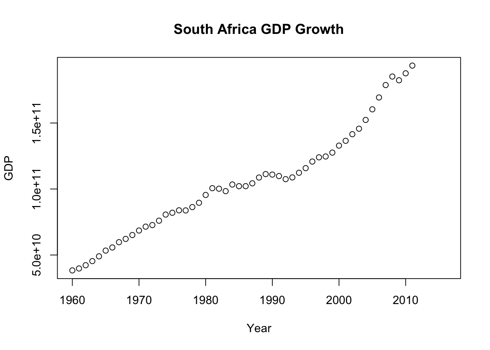

Chunk1-Rmarkdown-install dslabs
R Markdown
This is an R Markdown document. Markdown is a simple formatting syntax for authoring HTML, PDF, and MS Word documents. For more details on using R Markdown see http://rmarkdown.rstudio.com.
When you click the Knit button a document will be generated that includes both content as well as the output of any embedded R code chunks within the document. You can embed an R code chunk like this:
## speed dist
## Min. : 4.0 Min. : 2.00
## 1st Qu.:12.0 1st Qu.: 26.00
## Median :15.0 Median : 36.00
## Mean :15.4 Mean : 42.98
## 3rd Qu.:19.0 3rd Qu.: 56.00
## Max. :25.0 Max. :120.00Including Plots
You can also embed plots, for example:

Note that the echo = FALSE parameter was added to the code chunk to prevent printing of the R code that generated the plot.
#Load dsLabs package and plotting package
#look at help file for gapminder data
#Get an overview of data structure
## 'data.frame': 10545 obs. of 9 variables:
## $ country : Factor w/ 185 levels "Albania","Algeria",..: 1 2 3 4 5 6 7 8 9 10 ...
## $ year : int 1960 1960 1960 1960 1960 1960 1960 1960 1960 1960 ...
## $ infant_mortality: num 115.4 148.2 208 NA 59.9 ...
## $ life_expectancy : num 62.9 47.5 36 63 65.4 ...
## $ fertility : num 6.19 7.65 7.32 4.43 3.11 4.55 4.82 3.45 2.7 5.57 ...
## $ population : num 1636054 11124892 5270844 54681 20619075 ...
## $ gdp : num NA 1.38e+10 NA NA 1.08e+11 ...
## $ continent : Factor w/ 5 levels "Africa","Americas",..: 4 1 1 2 2 3 2 5 4 3 ...
## $ region : Factor w/ 22 levels "Australia and New Zealand",..: 19 11 10 2 15 21 2 1 22 21 ...#get a summary of the data
## country year infant_mortality life_expectancy
## Albania : 57 Min. :1960 Min. : 1.50 Min. :13.20
## Algeria : 57 1st Qu.:1974 1st Qu.: 16.00 1st Qu.:57.50
## Angola : 57 Median :1988 Median : 41.50 Median :67.54
## Antigua and Barbuda: 57 Mean :1988 Mean : 55.31 Mean :64.81
## Argentina : 57 3rd Qu.:2002 3rd Qu.: 85.10 3rd Qu.:73.00
## Armenia : 57 Max. :2016 Max. :276.90 Max. :83.90
## (Other) :10203 NA's :1453
## fertility population gdp continent
## Min. :0.840 Min. :3.124e+04 Min. :4.040e+07 Africa :2907
## 1st Qu.:2.200 1st Qu.:1.333e+06 1st Qu.:1.846e+09 Americas:2052
## Median :3.750 Median :5.009e+06 Median :7.794e+09 Asia :2679
## Mean :4.084 Mean :2.701e+07 Mean :1.480e+11 Europe :2223
## 3rd Qu.:6.000 3rd Qu.:1.523e+07 3rd Qu.:5.540e+10 Oceania : 684
## Max. :9.220 Max. :1.376e+09 Max. :1.174e+13
## NA's :187 NA's :185 NA's :2972
## region
## Western Asia :1026
## Eastern Africa : 912
## Western Africa : 912
## Caribbean : 741
## South America : 684
## Southern Europe: 684
## (Other) :5586#determine the type of object gapminder is
## [1] "data.frame"#Write code that assigns only the African countries to a new object/variable called africadata.
africadata
#Running str and summary functions
## 'data.frame': 2907 obs. of 9 variables:
## $ country : Factor w/ 185 levels "Albania","Algeria",..: 2 3 18 22 26 27 29 31 32 33 ...
## $ year : int 1960 1960 1960 1960 1960 1960 1960 1960 1960 1960 ...
## $ infant_mortality: num 148 208 187 116 161 ...
## $ life_expectancy : num 47.5 36 38.3 50.3 35.2 ...
## $ fertility : num 7.65 7.32 6.28 6.62 6.29 6.95 5.65 6.89 5.84 6.25 ...
## $ population : num 11124892 5270844 2431620 524029 4829291 ...
## $ gdp : num 1.38e+10 NA 6.22e+08 1.24e+08 5.97e+08 ...
## $ continent : Factor w/ 5 levels "Africa","Americas",..: 1 1 1 1 1 1 1 1 1 1 ...
## $ region : Factor w/ 22 levels "Australia and New Zealand",..: 11 10 20 17 20 5 10 20 10 10 ...## country year infant_mortality life_expectancy
## Algeria : 57 Min. :1960 Min. : 11.40 Min. :13.20
## Angola : 57 1st Qu.:1974 1st Qu.: 62.20 1st Qu.:48.23
## Benin : 57 Median :1988 Median : 93.40 Median :53.98
## Botswana : 57 Mean :1988 Mean : 95.12 Mean :54.38
## Burkina Faso: 57 3rd Qu.:2002 3rd Qu.:124.70 3rd Qu.:60.10
## Burundi : 57 Max. :2016 Max. :237.40 Max. :77.60
## (Other) :2565 NA's :226
## fertility population gdp continent
## Min. :1.500 Min. : 41538 Min. :4.659e+07 Africa :2907
## 1st Qu.:5.160 1st Qu.: 1605232 1st Qu.:8.373e+08 Americas: 0
## Median :6.160 Median : 5570982 Median :2.448e+09 Asia : 0
## Mean :5.851 Mean : 12235961 Mean :9.346e+09 Europe : 0
## 3rd Qu.:6.860 3rd Qu.: 13888152 3rd Qu.:6.552e+09 Oceania : 0
## Max. :8.450 Max. :182201962 Max. :1.935e+11
## NA's :51 NA's :51 NA's :637
## region
## Eastern Africa :912
## Western Africa :912
## Middle Africa :456
## Northern Africa :342
## Southern Africa :285
## Australia and New Zealand: 0
## (Other) : 0#Create two new objects, one containing infant_mortality and life_expectancy, the other population and life_expectancy
#checking new created objects head(InfMortandLifeExp)
head (PopandLifeExp)
#Running str and summary commands on InfMortandLifeExp and PopandLifeExp str(InfMortandLifeExp)
summary(InfMortandLifeExp)
str(PopandLifeExp)
summary(PopandLifeExp)
#plotting life expectancy as a function of infant mortality plot(InfMortandLifeExp\(infant_mortality, InfMortandLifeExp\)life_expectancy)
#plotting life expectancy as a function of population size plot(PopandLifeExp\(population, PopandLifeExp\)life_expectancy)
set x axis to a log scale for plot of life expectancy as a function of population size
plot(log(PopandLifeExp\(population), PopandLifeExp\)life_expectancy)
#Selecting data from year 2000 from africadata yr2000AfricaData <- africadata[which(africadata$year==2000), ]
#checking result yr2000AfricaData
#plotting life expectancy as a function of infant mortality - Year 2000 plot(yr2000AfricaData\(infant_mortality, yr2000AfricaData\)life_expectancy)
#plotting life expectancy as a function of population size - Year 2000 plot(log(yr2000AfricaData\(population), yr2000AfricaData\)life_expectancy)
#Creating simple fit using lm function - life expectancy=outcome infant mortality=predictor fit1 <- lm(life_expectancy~infant_mortality, data = yr2000AfricaData)
#Creating simple fit using lm function - life expectancy=outcome pop size=predictor fit2 <- lm(life_expectancy~population, data = yr2000AfricaData)
#running summary function for fit1 and fit2 summary(fit1) summary(fit2)
#P value for fit1 is 2.83e-08 so there is acorrelation between life expectancy and infant mortality
#P value for fit2 is 0.616 so there is not a correlation between life expectancy and population size
Zhihan’s Section
# extract data for south africa
sa = africadata[africadata$country=="South Africa",]
# see the country's GDP growth over time
plot(sa$year,sa$gdp, main="South Africa GDP Growth", xlab = "Year", ylab = "GDP")
# see the corelation btw life_expectancy and GDP
fit3 <- lm(life_expectancy~gdp, data = sa)
summary(fit3)##
## Call:
## lm(formula = life_expectancy ~ gdp, data = sa)
##
## Residuals:
## Min 1Q Median 3Q Max
## -5.3984 -3.4819 -0.8968 3.3547 6.9323
##
## Coefficients:
## Estimate Std. Error t value Pr(>|t|)
## (Intercept) 5.278e+01 1.513e+00 34.89 <2e-16 ***
## gdp 3.023e-11 1.344e-11 2.25 0.0289 *
## ---
## Signif. codes: 0 '***' 0.001 '**' 0.01 '*' 0.05 '.' 0.1 ' ' 1
##
## Residual standard error: 3.93 on 50 degrees of freedom
## (5 observations deleted due to missingness)
## Multiple R-squared: 0.09195, Adjusted R-squared: 0.07379
## F-statistic: 5.063 on 1 and 50 DF, p-value: 0.02887